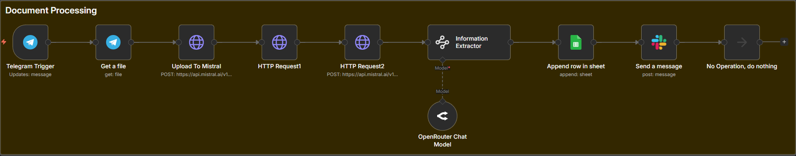

Document Processing System
Turn hours of manual paperwork into automated workflows.

The Problem
Many businesses waste hours every day manually processing documents like invoices,
forms, and PDFs.
- Up to 50+ hours/week spent on manual entry
- 5–15% human error rate
- Slow processing delays operations
Why This Matters
Manual document processing is one of the biggest hidden cost leaks in businesses.
How The System Works
- Documents are received automatically
- Data is extracted instantly
- Validated and structured
- Sent to CRM / Sheets / ERP
Business Impact
- Save 40–50+ hours/week
- Reduce errors
- Scale without hiring
Book This System →